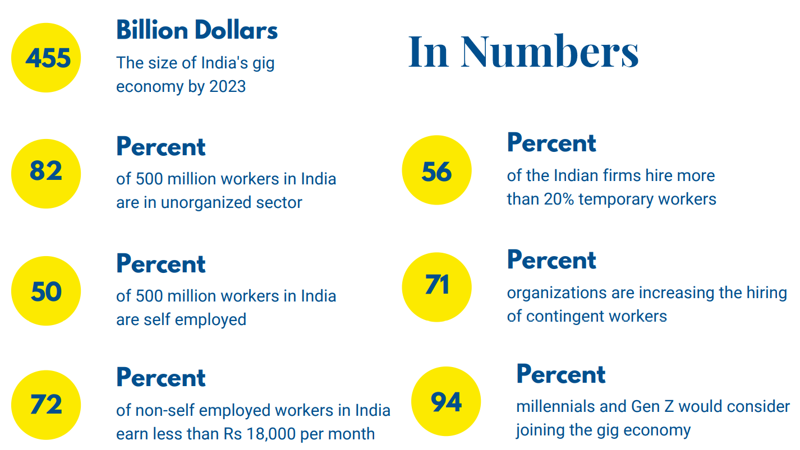
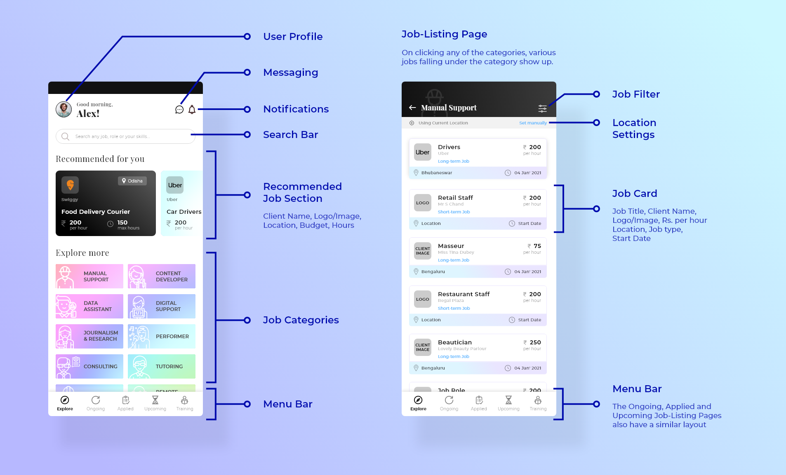
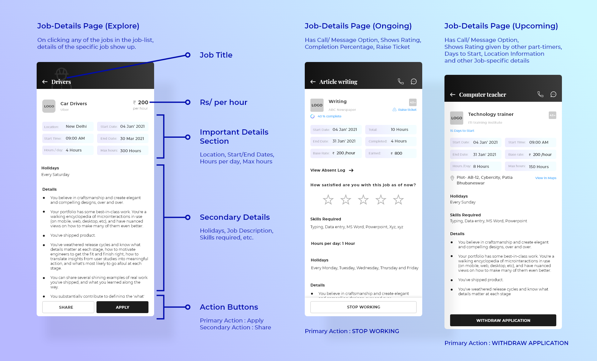
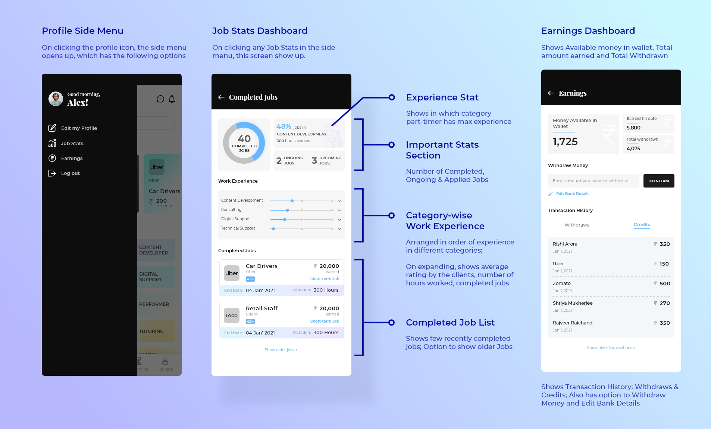
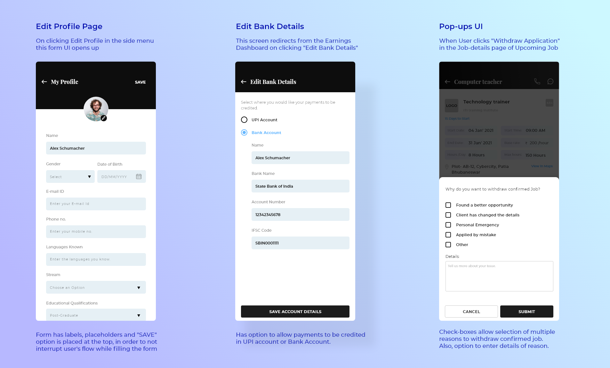

OVERVIEW
This project was like a brilliant opportunity knocking at my door in mid-December! I got the chance to design for an extremely talented team of IIT and IIM alumni, who worked day in and day out to make their dream of starting a business come true! They had an idea. They had done the business and market research right. I was there to give form to the idea! To design for an audience of part-timer job seekers and hirers, keeping in mind optimum usability for the novice, non-tech savvy users.
The Problem

- Increasing unemployment and decreasing growth of full time job opportunities in India
- Ongoing standardization and digitalization in India's gig economy limited to Tier-1 cities and small variety of jobs.
- Most of the current players in gig economy do not offer much choices and flexibility to their workforce in terms of nature, duration and mode of work thereby limiting the advantages of gig economy for the workforce.

The Product
A platform which connects seekers of human resources to seekers of part-time jobs; facilitates financial transaction between them; and incentivizes quality and professionalism. The Platform will host around 100 types of Jobs in 15+ Categories.
User Research
We were aware of the problem. The numbers also validated the need of such a platform. Next, the very crucial step was to understand the real users: the job-seekers or part-timers and the hirers. There were also some part-timers who themselves wanted to hire other part-timers for different requirements.
This invented the need to have two separate applications: one for part-timers and other for hirers or requesters. After surveying and interviewing a large number of users from different walks of life, we were able to define the following user personas.
Competitive Analysis
- Established Competitors- Largely in Digital and IT services sector: Naukri.com, Fiverr, Toptal, Upwork, Freelancer.com, guru
- New Competitors- Largely in Traditionally Unorganised sector: Crescent, Wishup, ExpertRight, Worknrby, Urban Company, BookMyBai
What makes us different?
The Utopia
- The process of individuals and households hiring small scale service providers becomes digital and standardized.
- Organizations seamlessly hiring right part-timers for their temporary/seasonal human resource demand in required scale and for large variety of jobs.
- Individuals easily getting relevant gigs and with right compensations.
Information Architecture
This was the final user flow diagram or the information architecture of the Part-timers app decided at the end of the User research. The Requesters app also had a similar flow, where instead of Jobs, they can see part-timers skilled in different categories and thus host a job and hire part-timers.
Low-Fidelity Prototyping
After deciding the user flow and brainstorming about all features that the app offers, we made simple wireframes for the app.
Fun fact: These wireframes were made using MS Powerpoint, to allow the non-designers to edit them!
Wireframes for the App for Part-timers
Check out some of the wireframes for the Part-timers app. These provided a skeleton for moving forward and designing the high-fidelity screens. The screens for "Applied Jobs" and "Upcoming Jobs" section would be similar to that of the "Ongoing Jobs".
Wireframes for the App for Clients
Following are few screens for the Clients or Requesters' App. The basic layout was similar as the other app, but the look and feel of the high-fidelity designs was to be somewhat different.
Branding
There were two major objectives of this Visual Design and Branding phase.
- Decide upon the color palette: We wanted both the apps to have a different look and feel, while also have some similarities. The colors were selected keeping in mind that the app would be used by varying group of users.
- Design the app logo: The logo is a monigram of Q and K. It also appears like a magnifying glass, symbolic of "searching part-time jobs" or "searching part-timers"
High-Fidelity Designing
For the Part-timers' App
Check out some of the major screens of the App below. Or go to the prototype.


